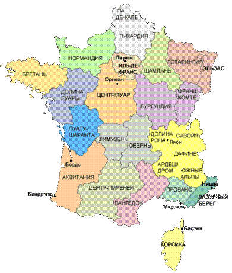
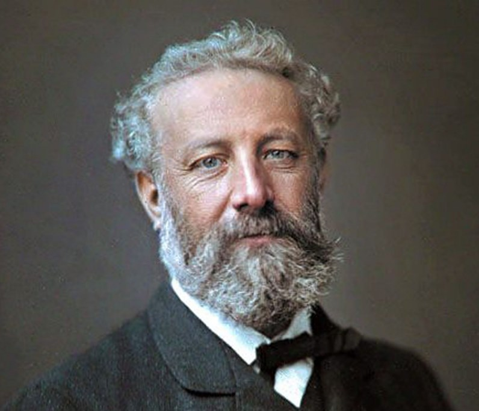
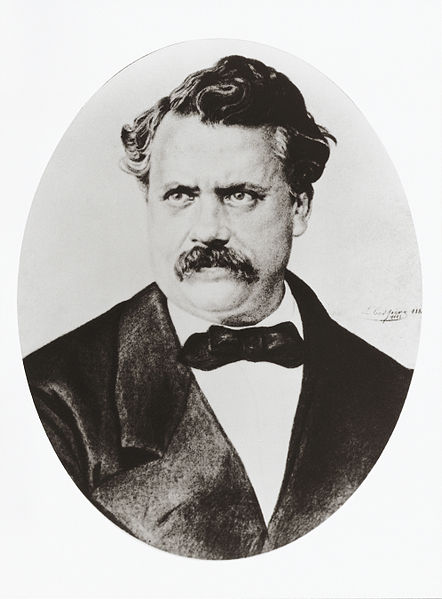
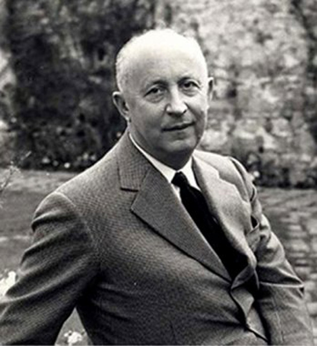

Известные люди Франции
—>
<
>

Жюль Верн
Французский писатель, классик приключенческой литературы, один из основоположников жанра научной фантастики, гуманист. Член Французского Географического общества. По статистике ЮНЕСКО, книги Жюля Верна занимают второе место по переводимости в мире, уступая лишь произведениям Агаты Кристи.

Луи Вюитто́н
Французский предприниматель и дизайнер, основатель дома моды Louis Vuitton.
Коко Шанель
Французский модельер, основатель модного дома Chanel. Оказала существенное влияние на европейскую моду XX века; единственный человек из мира моды, кого журнал «Тайм» внёс в список ста самых влиятельных людей XX века. Для стиля Шанель, способствовавшего упрощению женского костюма, свойственно заимствование элементов традиционного мужского гардероба и следование принципу «роскошной простоты» (le luxe de la simplicité). Она привнесла в женскую моду приталенный жакет и маленькое чёрное платье; из аксессуаров наиболее известными стали сумка на цепочке и крупная бижутерия — в первую очередь броши-камелии и искусственный жемчуг. Производимые её фирмой духи «Chanel No. 5» стали парфюмерным бестселлером XX века.

Кристиан Диор
Французский модельер, основатель модного дома Christian Dior.